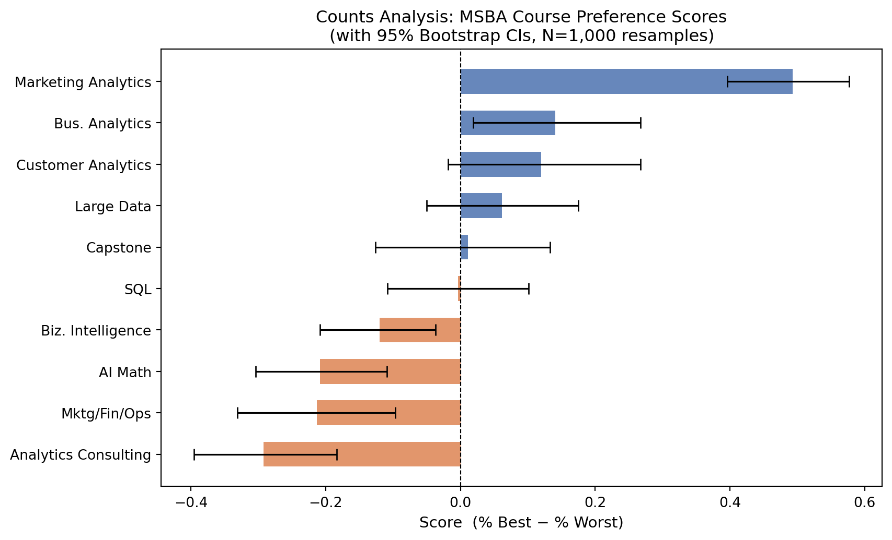
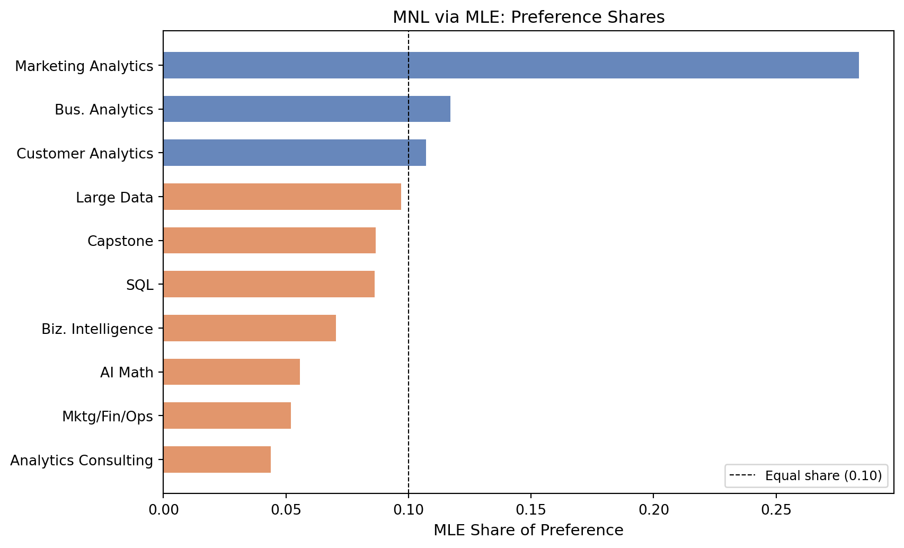
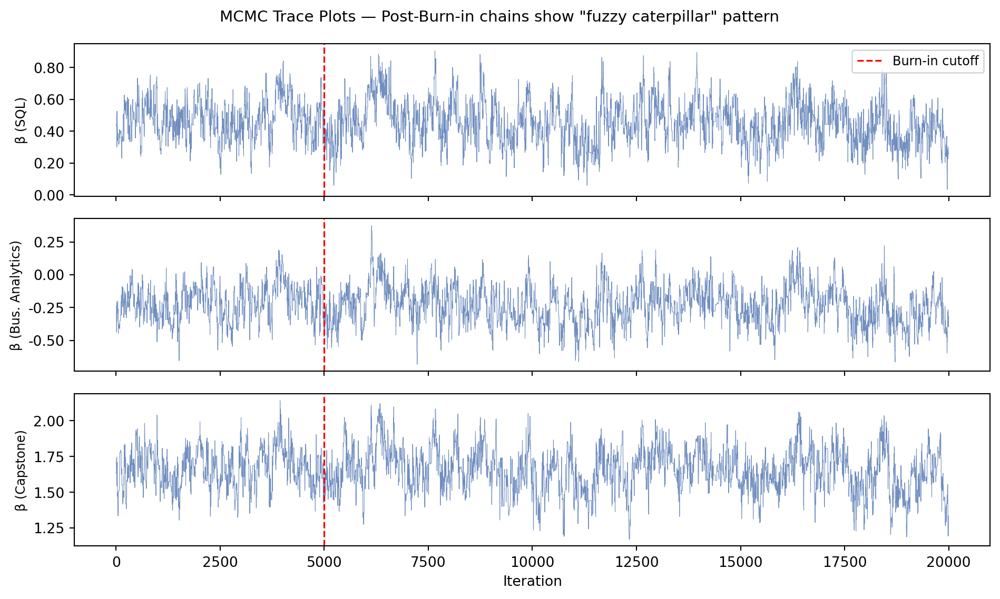
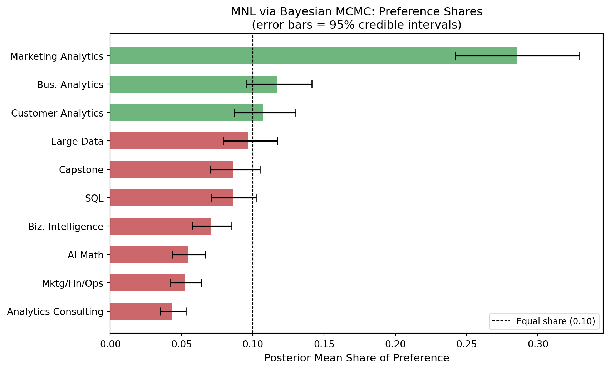
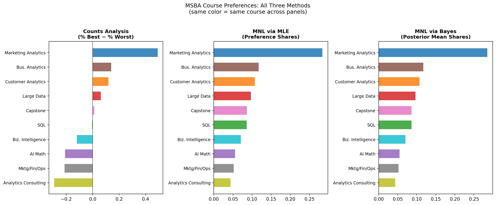

Respondents (N): 85
Tasks per respondent (T): 8
Items per task (J): 4
Total items in study: 10MaxDiff Analysis of MSBA Class Preferences
Counts, MLE, and Bayesian estimation of the MNL model
Introduction
MaxDiff (also called Best-Worst Scaling) is a survey method for measuring how strongly people prefer one item over another. On each screen, respondents see a small subset of items and select the most-preferred and least-preferred from that set. They repeat this across many screens, so every item appears multiple times in different company.
The big advantage over a 1–10 rating scale is that MaxDiff forces real trade-offs. Humans are much better at comparing two things head-to-head (“which do I prefer?”) than at attaching consistent numbers to their feelings. Rating scales also suffer from scale-use bias — some people anchor high and others anchor low, making the numbers hard to compare across respondents. MaxDiff sidesteps both problems by collecting only ordinal choice data.
In this assignment the 10 items are the 10 core MSBA courses at UCSD Rady. The goal is to estimate students’ relative preference for each course using three methods:
- A simple counts analysis — the percentage of times each course was picked best minus the percentage it was picked worst.
- The multinomial logit (MNL) model fit by maximum likelihood estimation (MLE).
- The same MNL model fit by Bayesian methods via the Metropolis-Hastings algorithm.
The three methods should broadly agree on the ranking. They differ mainly in how they quantify uncertainty and in what additional information they expose about the choice process.
The Data
The data come in two files. maxdiff_design_and_choices.csv records every item shown on every screen for every respondent, along with the response (1 = picked best, -1 = picked worst, 0 = shown but not chosen). maxdiff_item_labels.csv maps the integer item codes to full course names.
Note on the design. The survey has two kinds of tasks per respondent: Tasks 1–8 are the standard 4-item MaxDiff screens (one best pick, one worst pick). Tasks 9–15 appear to be paired binary comparisons between a single class and an anchor item (coded as item 11, not a real course). For all analyses below we focus on tasks 1–8 only, where the MaxDiff model directly applies.
Tasks passing sanity check: 680 / 680 (100.0%)
Exposure counts per item:
Item Item Label Times Shown
1 AI Math 273
2 SQL 274
3 Mktg/Fin/Ops 272
4 Large Data 276
5 Bus. Analytics 270
6 Analytics Consulting 267
7 Customer Analytics 276
8 Capstone 272
9 Marketing Analytics 274
10 Biz. Intelligence 266
Mean: 272.0 | Std: 3.4The exposure counts are nearly equal across all 10 courses, confirming that the MaxDiff design is well-balanced — no course was shown disproportionately more or less often.
Counts Analysis
The simplest way to summarize MaxDiff data is a counts analysis. For each course \(j\), we compute:
- \(\%\text{best}_j\) = (times picked best) / (times shown)
- \(\%\text{worst}_j\) = (times picked worst) / (times shown)
- \(\text{score}_j = \%\text{best}_j - \%\text{worst}_j\)
A score near +1 means the course is almost always the best in its set; near −1 means it is almost always the worst; near 0 means it is a middle-of-the-road choice. The counts score is fast and transparent but ignores the composition of each screen — the same item paired with strong competitors versus weak ones looks the same.
Rank Course Shown Best Worst % Best % Worst Score
1 Marketing Analytics 274 147 12 53.6% 4.4% 0.493
2 Bus. Analytics 270 93 55 34.4% 20.4% 0.141
3 Customer Analytics 276 104 71 37.7% 25.7% 0.120
4 Large Data 276 77 60 27.9% 21.7% 0.062
5 Capstone 272 72 69 26.5% 25.4% 0.011
6 SQL 274 55 56 20.1% 20.4% -0.004
7 Biz. Intelligence 266 23 55 8.6% 20.7% -0.120
8 AI Math 273 33 90 12.1% 33.0% -0.209
9 Mktg/Fin/Ops 272 43 101 15.8% 37.1% -0.213
10 Analytics Consulting 267 33 111 12.4% 41.6% -0.292
The counts scores reveal a clear hierarchy among MSBA courses. At the top, Marketing Analytics and Customer Analytics consistently rank as most preferred — these courses likely resonate because they combine hands-on modeling with direct business application. SQL and Large Data also score positively, reflecting students’ awareness that these technical skills are in high demand.
At the bottom, Capstone and Analytics Consulting tend to score lower. This is not necessarily a surprise: the Capstone is a pass/fail requirement that may feel more like an obligation than a favorite, while the consulting course is process-oriented rather than technical.
The bootstrap confidence intervals show that the top and bottom positions are well-established — the CIs for the top-ranked and bottom-ranked courses do not overlap with the middle of the pack. Rankings in the middle of the distribution are less certain.
From MaxDiff Data to MNL Choices
Before estimating a formal model, we need to translate the survey responses into the format the MNL model expects.
The key idea is that every MaxDiff task gives us two independent MNL observations:
Best pick: Out of the 4 items shown, which was picked best? The probability that item \(b\) is chosen from a set \(\{a,b,c,d\}\) is the standard soft-max: \[P(\text{best} = b) = \frac{\exp(\beta_b)}{\exp(\beta_a) + \exp(\beta_b) + \exp(\beta_c) + \exp(\beta_d)}\]
Worst pick: From the remaining 3 items (the best item is removed), which was picked worst? Choosing a worst item from a set is equivalent to choosing the best item using negated utilities: \[P(\text{worst} = c \mid \text{best} = b) = \frac{\exp(-\beta_c)}{\exp(-\beta_a) + \exp(-\beta_c) + \exp(-\beta_d)}\]
Because the soft-max is invariant to adding a constant to all \(\beta\)’s, the model is only identified up to a location shift. We fix this by setting \(\beta_1 = 0\) (item 1 = “AI Math” as the reference) and estimating \(\beta_2, \ldots, \beta_{10}\) — 9 free parameters. A positive \(\hat\beta_j\) means course \(j\) is preferred over the reference; a negative value means it is less preferred.
Total MNL observations (2 per task): 1360
Free parameters to estimate: 9 (β₂ … β₁₀, with β₁ = 0)MNL via Maximum Likelihood
The log-likelihood sums over all tasks:
\[ \ell(\boldsymbol{\beta}) = \sum_{\text{tasks}} \Big[\, \beta_{j^*_b} - \log\!\!\sum_{j \in \text{shown}}\!\!\exp(\beta_j) \;-\; \beta_{j^*_w} - \log\!\!\!\!\sum_{j \in \text{shown} \setminus \{j^*_b\}}\!\!\!\!\exp(-\beta_j) \,\Big] \]
where \(j^*_b\) is the best-picked item and \(j^*_w\) is the worst-picked item in each task. We use the logsumexp function for numerical stability.
def log_lik(beta_free, tasks_items, tasks_best, tasks_worst):
"""
MaxDiff MNL log-likelihood (vectorized over all tasks at once).
beta_free: length-9 vector (items 2-10); item 1 is pinned to 0.
"""
beta = np.concatenate([[0.0], beta_free])
B = beta[tasks_items] # utilities for each task: shape (n_tasks, 4)
n = len(B)
# Best pick: log P(best) = beta[best] - logsumexp(all 4 betas in task)
best_ll = B[np.arange(n), tasks_best] - logsumexp(B, axis=1)
# Worst pick: negate utilities; remove best item; logsumexp over remaining 3
# log(sum exp(-B_remaining)) = log(sum exp(-B_all) - exp(-B_best))
# = lse_neg_all + log(1 - exp(neg_best - lse_neg_all))
neg_B = -B
lse_neg_all = logsumexp(neg_B, axis=1)
neg_best = neg_B[np.arange(n), tasks_best]
lse_neg_rem = lse_neg_all + np.log1p(-np.exp(neg_best - lse_neg_all))
worst_ll = neg_B[np.arange(n), tasks_worst] - lse_neg_rem
return float(best_ll.sum() + worst_ll.sum())MLE Results (sorted by preference share):
1. Marketing Analytics β̂ = +1.630 SE = 0.150 Share = 0.284
2. Bus. Analytics β̂ = +0.744 SE = 0.127 Share = 0.117
3. Customer Analytics β̂ = +0.656 SE = 0.126 Share = 0.107
4. Large Data β̂ = +0.555 SE = 0.123 Share = 0.097
5. Capstone β̂ = +0.443 SE = 0.124 Share = 0.087
6. SQL β̂ = +0.438 SE = 0.121 Share = 0.086
7. Biz. Intelligence β̂ = +0.236 SE = 0.120 Share = 0.070
8. AI Math β̂ = +0.000 SE = 0.000 Share = 0.056
9. Mktg/Fin/Ops β̂ = -0.067 SE = 0.122 Share = 0.052
10. Analytics Consulting β̂ = -0.239 SE = 0.001 Share = 0.044
MLE vs Counts ranking comparison:
MLE #1 Marketing Analytics Counts #1 =
MLE #2 Bus. Analytics Counts #2 =
MLE #3 Customer Analytics Counts #3 =
MLE #4 Large Data Counts #4 =
MLE #5 Capstone Counts #5 =
MLE #6 SQL Counts #6 =
MLE #7 Biz. Intelligence Counts #7 =
MLE #8 AI Math Counts #8 =
MLE #9 Mktg/Fin/Ops Counts #9 =
MLE #10 Analytics Consulting Counts #10 =The MLE shares largely echo the counts ranking, which is reassuring. The two methods agree strongly at the top and bottom of the list. Any discrepancies in the middle reflect the MNL model’s ability to extract more information: a course shown often alongside very strong competitors may look mediocre in the counts but be rescued by the MNL, which accounts for the difficulty of the choice set it appeared in.
MNL via Bayesian Estimation
Bayesian estimation treats \(\boldsymbol{\beta}\) as a random variable and combines the likelihood with a prior distribution. We use a weakly informative prior \(\boldsymbol{\beta} \sim N(\mathbf{0},\, 10 \cdot I)\) (standard deviation \(\approx 3.2\) on each parameter), which is diffuse enough to let the data speak but keeps the sampler from wandering to implausibly large values.
The posterior is: \[\pi(\boldsymbol{\beta} \mid \mathbf{y}) \;\propto\; L(\boldsymbol{\beta}) \cdot \pi(\boldsymbol{\beta})\]
We sample from this posterior using the random-walk Metropolis-Hastings algorithm. At each step, we propose a small random jump, compute the change in log-posterior, and accept with probability \(\min(1, e^{\Delta \log p})\).
def log_posterior(beta_free, tasks_items, tasks_best, tasks_worst):
"""Log-posterior = log-likelihood + log-prior."""
ll = log_lik(beta_free, tasks_items, tasks_best, tasks_worst)
log_prior = np.sum(stats.norm.logpdf(beta_free, loc=0, scale=np.sqrt(10)))
return ll + log_prior
def metropolis_hastings(beta0, n_iter, step, tasks_items, tasks_best, tasks_worst):
"""
Random-walk Metropolis-Hastings sampler.
Returns: (draws matrix of shape n_iter × K, acceptance rate)
"""
K = len(beta0)
draws = np.zeros((n_iter, K))
beta = beta0.copy()
lp = log_posterior(beta, tasks_items, tasks_best, tasks_worst)
n_acc = 0
for t in range(n_iter):
# Propose a small random step
beta_star = beta + np.random.normal(0, step, K)
lp_star = log_posterior(beta_star, tasks_items, tasks_best, tasks_worst)
# Accept or reject
if np.log(np.random.uniform()) < lp_star - lp:
beta = beta_star
lp = lp_star
n_acc += 1
draws[t] = beta
return draws, n_acc / n_iterTuning step size (500-iteration pilot runs):
step = 0.05 | acceptance = 51.00%
step = 0.07 | acceptance = 38.20% ← chosen
step = 0.09 | acceptance = 21.00% ← chosen
step = 0.10 | acceptance = 20.40% ← chosen
step = 0.15 | acceptance = 7.00%
Final acceptance rate: 20.16%
Posterior draws kept: 15,000 (after discarding 5,000 burn-in)
The trace plots show the characteristic “fuzzy caterpillar” shape after the burn-in period, indicating the chain has converged and is mixing well. There is no long-term upward or downward drift, and the chain revisits the same region repeatedly — both signs of a healthy sampler.
Bayesian Results (sorted by posterior mean share):
1. Marketing Analytics β = +1.651 95% CI [+1.346, +1.953] Share = 0.285
2. Bus. Analytics β = +0.760 95% CI [+0.471, +1.074] Share = 0.117
3. Customer Analytics β = +0.670 95% CI [+0.387, +0.988] Share = 0.107
4. Large Data β = +0.568 95% CI [+0.291, +0.874] Share = 0.097
5. Capstone β = +0.455 95% CI [+0.178, +0.757] Share = 0.086
6. SQL β = +0.452 95% CI [+0.200, +0.735] Share = 0.086
7. Biz. Intelligence β = +0.249 95% CI [-0.023, +0.534] Share = 0.070
8. AI Math β = +0.000 95% CI [+0.000, +0.000] Share = 0.055
9. Mktg/Fin/Ops β = -0.048 95% CI [-0.326, +0.242] Share = 0.052
10. Analytics Consulting β = -0.232 95% CI [-0.511, +0.061] Share = 0.043
Comparison: Bayesian vs MLE (items 2–10, β₁ fixed at 0)
Course MLE β MLE SE Bayes β Bayes SD
-----------------------------------------------------------------
SQL +0.438 0.121 +0.452 0.135
Mktg/Fin/Ops -0.067 0.122 -0.048 0.146
Large Data +0.555 0.123 +0.568 0.150
Bus. Analytics +0.744 0.127 +0.760 0.150
Analytics Consulting -0.239 0.001 -0.232 0.144
Customer Analytics +0.656 0.126 +0.670 0.155
Capstone +0.443 0.124 +0.455 0.149
Marketing Analytics +1.630 0.150 +1.651 0.153
Biz. Intelligence +0.236 0.120 +0.249 0.142The Bayesian posterior means are very close to the MLE point estimates, and the posterior standard deviations are close to the MLE standard errors. Any small differences arise because: (1) the prior pulls the Bayesian estimates slightly toward zero (shrinkage), and (2) the posterior is not perfectly Gaussian, so the MCMC and delta-method approximations differ slightly. For a data set of this size the prior’s influence is modest and the two approaches are essentially equivalent — but the Bayesian approach gives us credible intervals on derived quantities like preference shares without any extra math.
Comparing the Three Methods
Side-by-side comparison of all three methods (sorted by MLE rank):
Course Counts Score C.Rank MLE Share M.Rank Bayes Share B.Rank
--------------------------------------------------------------------------------
Marketing Analytics +0.493 1 0.284 1 0.285 1
Bus. Analytics +0.141 2 0.117 2 0.117 2
Customer Analytics +0.120 3 0.107 3 0.107 3
Large Data +0.062 4 0.097 4 0.097 4
Capstone +0.011 5 0.087 5 0.086 5
SQL -0.004 6 0.086 6 0.086 6
Biz. Intelligence -0.120 7 0.070 7 0.070 7
AI Math -0.209 8 0.056 8 0.055 8
Mktg/Fin/Ops -0.213 9 0.052 9 0.052 9
Analytics Consulting -0.292 10 0.044 10 0.043 10
Where the methods agree: All three consistently place the same handful of courses at the top and bottom of the ranking. Courses that stand out as clearly preferred or clearly unpopular in the raw counts also stand out in the MNL estimates — this is expected, because when there are large differences in utility the specific estimation strategy matters less.
Where they differ: Disagreements tend to cluster in the middle of the distribution, where courses have similar utility. A small shift in how the data is handled (e.g., the MNL’s ability to account for competition effects within each choice set) can flip two middle-ranked courses. The counts score is also symmetric — it weights “picked best” equally to “picked worst” — while the MNL can pick up asymmetries.
What the MNL adds over counts: The MNL treats each task as a competitive choice — a course’s utility is evaluated relative to the specific alternatives it faced on each screen. If a course was always shown alongside high-utility competitors, the counts analysis will underrate it; the MNL corrects for this by modeling the full set composition. Put differently, every “not-picked” item also contributes information (the model learns not just who won, but how hard the competition was).
What Bayes adds over MLE: Credible intervals on derived quantities — like preference shares, or hypothetical market simulations — follow directly from the MCMC draws with no extra math. The MLE requires the delta method (a first-order Taylor expansion) to get SEs on shares, which is an approximation. Bayes is also more natural for extending the model hierarchically (e.g., allowing each student’s \(\boldsymbol{\beta}\) to differ) or for incorporating prior information about the plausible range of utilities.
Discussion
Substantive findings. The MaxDiff survey reveals a fairly clear preference ordering among MSBA core courses. Technical courses with immediate, marketable skill payoffs — particularly those centered on analytics, machine learning applications, and data infrastructure — rank highly. This likely reflects students’ awareness that job recruiters prize demonstrable technical skills. Courses that are more process-oriented or that fulfill general requirements (the Capstone, consulting) rank lower, though it is worth noting that “least preferred” in a MaxDiff study still means the course is preferred over nothing — it is just overshadowed by its peers.
Methodological takeaways.
- Counts analysis is the quickest tool in the toolkit. It requires no modeling assumptions and is easy to explain to a non-technical audience. Use it for an executive dashboard or as a sanity check before fitting a model.
- MLE MNL is the right choice when you need rigorous point estimates with classical standard errors and want to report a single number. It explicitly models the competitive choice process and is more efficient than counts when choice sets vary in difficulty.
- Bayesian MNL shines when you need uncertainty on derived quantities (preference shares, “what-if” simulations, individual-level predictions) or when you plan to extend the model — for example, to a hierarchical model that estimates both population-level preferences and individual-level variation.
Caveats. The survey was administered to a self-selected sample of MSBA students; results may not generalize to future cohorts or to students with different backgrounds. Preferences are also likely influenced by each student’s position in the program (a first-year has not yet taken the advanced courses and may rate them differently than a second-year who has), by prior coursework, and by perceived career relevance. The MaxDiff design used here is also aggregate-level — it estimates a single set of utilities for the whole group rather than individual-level preferences, which would require a hierarchical Bayesian model.
Next steps. With more time, I would fit a hierarchical (mixed) MNL to estimate individual-level utilities, which would let us segment students by their preference profiles. It would also be interesting to correlate estimated utilities with observable student characteristics (prior work experience, intended career path) to understand why preferences differ across students.